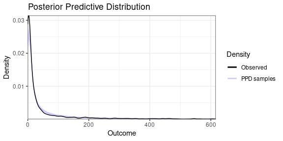
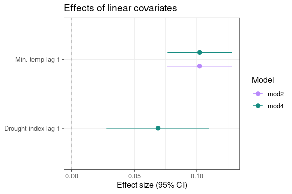

Introduction to GHRmodel
Overview
The GHRmodel package supports modeling health outcomes using Bayesian hierarchical spatio-temporal models with complex covariate effects (e.g., linear, non-linear, interactions, distributed lag linear and non-linear models) in the R-INLA framework. It is designed to help users identify key drivers and predictors of disease risk by enabling streamlined model exploration, comparison, and visualization of complex covariate effects.
The GHRmodel package is designed to work in tandem with other packages of the GHRtools suite: GHRexplore, which facilitates data exploration and visualization, and GHRpredict, which computes out-of-sample probabilistic predictions of models developed in GHRmodel and enables predictive performance evaluation. More information about the toolkit, with tutorials and published examples can be found at this website.
This vignette provides an overview of the GHRmodel package methodology, the core functions, and a simple example workflow using real data. More complex use-cases and examples are described in other vignettes (GHRmodel_DLNM regarding Distributed Lag Nonlinear Models in GHRmodel and GHRmodel_covariates describing Complex Covariate Structures in GHRmodel). Vignettes loaded in the package can be accessed in R by typing vignette("vignettename") (e.g., vignette("GHRmodel_overview")).
Installation
The latest version of the GHRmodel package is hosted on CRAN and can by installed using the following commands:
# Install from CRAN
install.packages("GHRmodel")
# Get the development version from Gitlab
library(devtools)
devtools::install_git('https://earth.bsc.es/gitlab/ghr/ghrmodel.git')If you have downloaded the source package as a .tar.gz file (e.g., from a release), you can install it locally using by typing install.packages("path_to_tar.gz_file/GHRmodel_0.1.0.tar.gz", repos = NULL, type = "source", build_vignettes = TRUE).
One key dependency of the GHRmodel package, the R-INLA package, is not hosted on CRAN and must be installed manually using:
install.packages("INLA",
repos=c(getOption("repos"),
INLA="https://inla.r-inla-download.org/R/stable"), dep=TRUE)Instructions on how to install R-INLA and troubleshooting suggestions can be found on the R-INLA download and installation page.
Data requirements
The data must be organized as a long-format data frame comprising a regularly spaced time series (e.g., daily, weekly, monthly) for a single or several spatial units. That is, each row must represent a single observation for a specific time and (optionally) a specific location. In this data frame, the time (e.g., date) and optional space identifiers (e.g., region_name) must be included as columns, as in the example below. The time identifier must be in Date format (YYYY-MM-DD).
#> # A tibble: 6 × 4
#> date region_name dengue_cases tmin
#> <date> <chr> <dbl> <dbl>
#> 1 2001-01-01 Alto Taquari 0 22.3
#> 2 2001-02-01 Alto Taquari 2 22.1
#> 3 2001-03-01 Alto Taquari 6 21.7
#> 4 2001-04-01 Alto Taquari 14 21.4
#> 5 2001-05-01 Alto Taquari 24 17.0
#> 6 2001-06-01 Alto Taquari 7 15.0Methodology
The goal of the GHRmodel package is to streamline the development of climate-sensitive disease risk models into a generalizable and reproducible modeling workflow, which could then be integrated into decision-support systems (e.g., see (Fletcher et al., 2025; Lowe et al., 2018, 2021)). The package implements a Bayesian hierarchical modeling framework to estimate disease case counts, assuming a Poisson or negative binomial distribution. The basic model structure incorporates random effects to capture unexplained seasonal, interannual, and spatial variation, alongside covariates representing (lagged) climatic, environmental, or socioeconomic drivers.
There are conflicting definitions of what constitutes a fixed effect or random effect (Gelman & Hill, 2006). In this vignette we will refer to:
fixed effects as covariates whose estimated effects on the outcome are of direct interest (e.g., include a fixed effect for mean temperature to measure the change in dengue incidence per each 1 °C increase, holding other factors constant).
random effects as model components that capture unobserved heterogeneity, accounting for variation across groups, clusters, or units that is not explained by observed covariates (e.g., include a district-level random effect to capture residual differences in baseline dengue incidence that are not explained by other covariates in the model, such as different reporting strategies or unmeasured vector habitat characteristics).
The basic model structure can be expressed as:
\[ y_{s,t} \sim \text{NegBin}(\mu_{s,t}, \theta) \]
\[ log(\mu_{s,t}) = \alpha + \delta_m(t) + \gamma_a(t) + u_s + v_s + \sum_{k} \beta_k X_{k,t,s} \]
Where:
\(y_{s,t}\) is the observed number of cases at location \(s\) and time \(t\).
\(\theta\) is the overdispersion parameter.
\(\mu_{s,t}\) is the expected value of the number of cases.
\(\alpha\) is the intercept
\(\delta_m(t)\) is the monthly random effect (seasonality)
\(\gamma_a(t)\) is the yearly random effect (interannual variation)
\(u_s\) is the structured spatial random effect for location \(s\)
\(v_s\) is the unstructured spatial random effect for location \(s\)
\(\sum_{k} \beta_k X_{k,t}\) is the sum over covariates (\(X_{k,t}\)) and their coefficients (\(\beta_k\))
This flexible structure serves as a foundation for more complex models incorporating interactions, non-linearities, and distributed lags.
Model estimation is performed using R-INLA, an R package that implements Bayesian inference using the Integrated Nested Laplace Approximation (INLA) method for latent Gaussian models (Lindgren et al., 2011; Rue et al., 2009). This approach offers substantial computational advantages compared to Markov Chain Monte Carlo (MCMC) inference methods, often yielding similar results with significantly reduced runtime (Rue et al., 2017). R-INLA also supports spatial and spatio-temporal modeling, making it well-suited for epidemiological applications.
To learn more about Bayesian inference, this paper provides an initial overview and this book (Statistical Rethinking) is a comprehensive and accessible introduction to the subject (McElreath, 2020; Van De Schoot et al., 2014). To learn more about Bayesian inference using R-INLA there is a wide array of freely accessible resources online. Useful online books include Bayesian Inference with INLA or Geospatial Health Data: modeling and visualization with R-INLA and Shiny (Gómez-Rubio, 2020; Moraga, 2019)
GHRmodel structure

GHRmodel functions to streamline INLA-compatible model formula development.
This vignette outlines the full modeling workflow using the GHRmodel package. The process is organized into three key stages: model development, model fitting, and model evaluation.
1. Model development
To fit a model with R-INLA, formulas need to follow its required syntax and structural conventions. INLA-compatible model formulas can be developed using either:
User-defined INLA-compatible input, which may consist of either user-defined covariate lists or user-defined formula lists.
GHRmodel helper functions that allow the user to pre-process and transform covariates and streamline writing INLA-compatible formulas.
Pre-process covariates: The
lag_cov,onebasis_inlaandcrossbasis_inlafunctions allow the user to create lagged covariates and one-or-two dimensional basis-transformed matrices, allowing the exploration of the effect of a covariate across the exposure and/or lag dimension.Write covariates: Functions with the prefix
*cov_allow the user to generate lists of covariates to simplify building valid INLA formulas. These functions allow the user to include lagged, non-linear or more complex covariate structures:
| Function | Purpose |
|---|---|
extract_names() |
Selects covariate names from a dataset |
cov_uni() |
Prepares covariates for univariable INLA models |
cov_nl() |
Converts covariates to non-linear effect terms, with optional replication. |
cov_interact() |
Creates interaction terms between 2 or 3 covariates (e.g., var1:var2). |
cov_varying() |
Creates spatially or temporally varying effect terms. |
cov_multi() |
Generates combinations of covariates for multivariable models. |
cov_add() |
Adds a covariate to each element of a covariate list. |
Overview of helper functions to prepare covariate lists for INLA model formulas.
- Write formulas: The
write_inla_formulas()function generates INLA-compatible model formulas with structured fixed effects, random effects, and interactions from a list of INLA-compatible covariate sets.
Once the INLA-compatible model formulas are developed, they must be passed to the as_GHRformulas() function to be converted into a standardized GHRformulas object. This ensures consistent output structure and random effect specification across models that can be interpreted by the function fit_models() for model fitting. The as_GHRformulas() function accepts either a user-defined vector of formulas or the output from write_inla_formulas(). Currently all formulas in a GHRformulas object must share the same random-effect structure. For example, you cannot combine formulas that include both seasonal and annual random effects with formulas that include only seasonal random effects.
For more information see vignette("GHRmodel_covariates").
2. Model fitting
The fit_models() function allows users to fit a set of INLA-compatible model formulas defined by a GHRformulas object to a provided data set. It automates model fitting, extraction of outputs, and computation of a wide range of goodness-of-fit (GoF) metrics. The output is a GHRmodels object.
Efficient modeling workflows often require organizing, comparing, and extracting subsets of models. The GHRmodels object supports these operations via helper functions to subset, stack, and retrieve covariates (subset_models(), stack_models(), get_covariates(), respectively).
3. Model evaluation
GHRmodel provides a range of functions for model diagnostics, interpretation and evaluation. Functions with the prefix plot_* return graphical ggplot2 or cowplot objects, allowing users to easily customize visual outputs.
Model diagnostics: posterior predictive checks (
plot_ppd()), assessment of GoF metrics (rank_models(),plot_gof()), visualization of fitted values vs. observed case counts (plot_fit()).Covariate effect visualizations (with the prefix
plot_coef_*) including:Linear effects (
plot_coef_lin())Non-linear effects (
plot_coef_nl())Group-varying effects (
plot_coef_varying())Effects derived from one-basis or crossbasis matrices (
plot_coef_crosspred())Random effects visualizations:
plot_re()can be used to assess spatial and temporal random effects.
To access the documentation for each function with detailed descriptions and examples, type in R ? functionname (e.g., ? plot_fit).
Plot color palettes follow the same structure as those in the GHRexplore package, a dependency of GHRmodel. These include several in-house palettes, as well as palettes from RColorBrewer and colorspace. For details on palette usage, see vignette("GHRexplore").
GHRmodel workflow
In this example, we demonstrate how to use GHRmodel to formulate, fit and evaluate univariable and bivariate models of dengue risk with tmin (monthly average daily minimum temperature averaged across each spatial unit) and pdsi (self-calibrated Palmer Drought Severity Index for each microregion) across 1- to 6-month lags.
📝 Note: The examples in this vignette are designed to demonstrate package functionality and should not be interpreted as best-practice guidance for model selection.
First, we load the required R libraries:
# Load necessary package dependencies
library(dplyr) # Data manipulation
library(tidyr) # Data tidying
library(tidyselect) # Helpers for selecting variables programmatically
library(rlang) # Tools for tidy evaluation and non-standard evaluation in tidyverse code
library(ggplot2) # Data visualization: creating plots and graphs
library(cowplot) # Combining and arranging multiple ggplot2 plots into a single figure
library(grDevices) # Base R graphics device functions (e.g., color palettes, saving plots)
library(RColorBrewer) # Predefined color palettes for plots
library(colorspace) # Advanced color space manipulation and palettes
library(sf) # Handling spatial vector data (simple features)
library(spdep) # Spatial dependence and autocorrelation analysis
library(sn) # Skew-normal and skew-t distributions (for modeling skewed data)
library(INLA) # Integrated Nested Laplace Approximation for Bayesian models
library(GHRexplore) # Exploratory analysis of health data
# Load GHRmodel
library(GHRmodel) 0. Data
Dataset description
The example dataset contains monthly counts of notified dengue cases by microregion, along with a range of spatial and spatio-temporal covariates. This dataset represents a subset of a larger national dataset that covers the entire territory of Brazil. The subset focuses on a specific region, Mato Grosso do Sul, for the purposes of illustration and computational efficiency. The original full data set, which includes data from all Brazilian microregions, is cited in the accompanying source code on GitHub and Zenodo.
In this data frame, the date column contains the temporal identifier (in this case, we have monthly data) and the spatial unit identifier is micro_code. Each micro_code corresponds to a distinct microregion with a complete monthly time series. For more information about the data set, see ?dengue_MS.
#Load data
data("dengue_MS")
df <- dengue_MS
# View initial rows in example dataframe
head(df)
#> # A tibble: 6 × 27
#> micro_code micro_name micro_name_ibge meso_code meso_name state_code state_name region_code region_name biome_code biome_name
#> <dbl> <chr> <chr> <dbl> <chr> <dbl> <chr> <dbl> <chr> <dbl> <chr>
#> 1 50001 Baixo Pantanal BAIXO PANTANAL 5001 Pantanais S… 50 Mato Gros… 5 Centre-West 3 Pantanal
#> 2 50002 Aquidauana AQUIDAUANA 5001 Pantanais S… 50 Mato Gros… 5 Centre-West 3 Pantanal
#> 3 50003 Alto Taquari ALTO TAQUARI 5002 Centro Nort… 50 Mato Gros… 5 Centre-West 2 Cerrado
#> 4 50004 Campo Grande CAMPO GRANDE 5002 Centro Nort… 50 Mato Gros… 5 Centre-West 2 Cerrado
#> 5 50005 Cassilândia CASSILÂNDIA 5003 Leste De Ma… 50 Mato Gros… 5 Centre-West 2 Cerrado
#> 6 50006 Paranaíba PARANAÍBA 5003 Leste De Ma… 50 Mato Gros… 5 Centre-West 2 Cerrado
#> # ℹ 16 more variables: ecozone_code <dbl>, ecozone_name <chr>, main_climate <chr>, month <dbl>, year <dbl>, time <dbl>,
#> # dengue_cases <dbl>, population <dbl>, pop_density <dbl>, tmax <dbl>, tmin <dbl>, pdsi <dbl>, urban <dbl>, water_network <dbl>,
#> # water_shortage <dbl>, date <date>Data pre-processing
Create numeric ID variables for categorical features (such as year, month, or spatial units) that may be included as random effects, in line with R-INLA’s requirements. R-INLA expects random effect variables to be specified as numeric indices. Additionally, each variable can only appear in a single model term. Therefore, if a categorical variable is used in multiple roles (e.g., as a random effect and also as a grouping variable for a fixed effect), separate numeric ID variables must be created for each usage.
💡 Tip: It is recommended to retain both the numeric ID and the original categorical variable in your dataset, as this supports easier interpretation and model evaluation, for example by allowing users to easily map model outputs based on numeric IDs back to the original labels for reporting or visualization.
💡 Tip: It is important to check that the time identifier is in
Dateformat (YYYY-MM-DD). This is especially important if we want to use GHRmodel functions to lag covariates.
Here we generate numeric IDs for year, month, the spatial unit at which the data is aggregated (in this case micro_code), and a larger aggregation unit (meso_code).
# Check that the date variable is in Date format
class(df$date)
#> [1] "Date"
# Create ID variables
df <- df |>
# Filter out the year 2000. There are no dengue cases for that year.
filter(year > 2000) |>
# Create numeric IDs for year, month and various spatial units.
mutate(
year_id = as.numeric(as.factor(year)),
month_id = as.numeric(as.factor(month)),
spat_id = as.numeric(as.factor(micro_code)),
spat_meso_id = as.numeric(as.factor(meso_code))
)Spatial data and graphs
To perform spatial analysis and generate maps of observations across multiple spatial units, the polygon geometries must be provided as an sf object. Polygon geometries represent the shapes and boundaries of spatial units (e.g., districts, or ecological zones) using a series of connected coordinate points that enclose an area. The sf object must include a spatial unit identifier to enable linkage with the corresponding data frame. For the dengue_MS dataset, the areal polygons are already included in the package in the map_MS object. In map_MS, the code variable corresponds to the micro_code area identifier in the dengue_MS object.
# Load map (sf object) included in package
data("map_MS")
# Visualize the map with microregion labels
ggplot() +
geom_sf(data = map_MS) +
geom_sf_text(data = map_MS, aes(label = code), size = 2.5) +
theme_minimal() +
labs(title = "Mato Grosso do Sul",
x = "Longitude",
y = "Latitude")+
theme(axis.text.x = element_text(angle = 90, vjust = 0.5, hjust = 1))
To model spatially structured random effects (e.g., using the Besag-York-Mollié model (BYM (Besag et al., 1991)) or BYM2 model (Simpson et al., 2017) for areal data in R-INLA), we need an adjacency matrix that defines neighboring relationships between spatial units. Spatially structured random effects (represented by \(u_s\) in the example model formulation above) account for spatial autocorrelation (meaning that nearby regions tend to have similar values) by introducing a correlation structure based on geographic proximity. Spatially unstructured random effects (represented by \(v_s\) in the example model formulation above) can be used to account for uncorrelated noise. Including these random effects helps capture spatial variation that is not explained by the fixed effects in the model.
The adjacency matrix, indicating which spatial units share borders, is constructed using the spdep package.
# Create adjacency Matrix
nb <- spdep::poly2nb(map_MS)
g <- spdep::nb2mat(nb, style = "B")1. Model development
In this example we demonstrate how to use the GHRmodel helper functions to streamline writing INLA-compatible formulas.
Create lagged covariates
lag_cov() creates lagged versions of numeric or categorical variables in an equally spaced time-series data set.
Here, we use it to generate lagged values for the variables tmin (monthly average daily minimum temperature averaged across each microregion) and pdsi (monthly Self-calibrated Palmer Drought Severity Index for each microregion) from 1- to 6-month lags using the lag_cov() function.
To use this function, the user must specify:
name: The name of the variable (or variables) to lag.time: The column representing the time variable.lag: a vector of integers (that is, list of numbers like2orc(1,2)) indicating how many time steps (e.g., months) the values should be shifted backward (for instance, a 1-month lag for tmin in February would correspond to the value of tmin in January).
In this example, each micro_code represents a spatial unit with its own monthly time series. When the dataset contains multiple such time series (one for each group) the group argument should be specified to ensure that lags are computed independently within each group.
The add argument determines whether the lagged variables should be appended to the original dataset (add = TRUE) or returned as a separate matrix (add = FALSE).
data <- lag_cov(data = df,
name = c("tmin", "pdsi"), # variables to lag
time = "date", # time variable
lag = c(1:6), # 1 to 6-month lags
group = "micro_code", # identify spatial units with independent time series
add = TRUE) # lagged variables appended to original data
# Visualize lagged variables
head(data[32:43])
#> # A tibble: 6 × 12
#> tmin.l1 tmin.l2 tmin.l3 tmin.l4 tmin.l5 tmin.l6 pdsi.l1 pdsi.l2 pdsi.l3 pdsi.l4 pdsi.l5 pdsi.l6
#> <dbl> <dbl> <dbl> <dbl> <dbl> <dbl> <dbl> <dbl> <dbl> <dbl> <dbl> <dbl>
#> 1 NA NA NA NA NA NA NA NA NA NA NA NA
#> 2 23.5 NA NA NA NA NA 0.0890 NA NA NA NA NA
#> 3 23.3 23.5 NA NA NA NA 0.260 0.0890 NA NA NA NA
#> 4 22.7 23.3 23.5 NA NA NA 0.266 0.260 0.0890 NA NA NA
#> 5 21.9 22.7 23.3 23.5 NA NA 0.0654 0.266 0.260 0.0890 NA NA
#> 6 17.8 21.9 22.7 23.3 23.5 NA -0.00682 0.0654 0.266 0.260 0.0890 NA💡 Tip: To avoid missing values introduced by lagged variables, consider including covariate data from months prior to your analysis start date. This helps ensure complete lag structures at the beginning of the time series. For instance if you disease case data records start in January 2010, and you intend to include covariates with up to a 3-month lag, you should include covariate data starting from October 2009 (3 months before the analysis start date).
Write covariates
The GHRmodel package contains a set of functions to help users generate organized lists of covariates to be included in the models, simplifying the process of building INLA-compatible formulas. In this vignette, we introduce some of those functions, for further detail please check the additional vignettes vignette("GHRmodel_covariates") and vignette("GHRmodel_DLNM") where advanced options including replicated, varying, interacting effects and Distributed Lag Non-linear Models (DLNM) are explained.
The GHRmodel covariate helper functions use a common structure to select covariates:
pattern: for partial string matching, selecting groups of covariates that share a common prefix (e.g., “tmin” would match “tmin.l1”, “tmin.l2”, etc.).name: for exact matching of covariate names
For all functions with the prefix cov_*, the input is a character vector or a list of character vectors representing covariate names specified in the covariates argument (which can be generated using the extract_names() function). The output is a list of covariates that may be combined or transformed, formatted for INLA formulas. add: is a logical flag indicating whether to retain original covariates in addition to transformed or combined ones in the output.
- Select variables to include in the model formulas
Users can specify which variables from the data set to include as covariates using the extract_names() function. It outputs a character vector of variable names.
Here we select lags 1 through 6 for tmin and pdsi. By including "tmin." and "pdsi." in the pattern argument, we capture all columns that match these prefixes (e.g., tmin.l1, tmin.l2, …, pdsi.l6).
# Extract variable names matching the specified patterns
cov_names <- extract_names(data = data,
pattern = c("tmin.",
"pdsi."))
# Visualize output: character vector of covariate names
glimpse(cov_names)
#> chr [1:12] "tmin.l1" "tmin.l2" "tmin.l3" "tmin.l4" "tmin.l5" "tmin.l6" "pdsi.l1" "pdsi.l2" "pdsi.l3" "pdsi.l4" "pdsi.l5" ...- Generate list of linear covariates for univariable models
The cov_uni() function returns a list where each element contains a single covariate. This structure is suitable for fitting separate univariable models.
# Generate list of single linear covariate names
uni_cov_lin <- cov_uni(covariates = cov_names, # Input character vector of covariate names
pattern = c("pdsi.l", # Select lagged pdsi and tmin from the vector of covariate names
"tmin.l"))
# Visualize output: list of single linear covariate names
head(uni_cov_lin,2)
#> [[1]]
#> [1] "pdsi.l1"
#>
#> [[2]]
#> [1] "pdsi.l2"- Generate list of non-linear covariates for univariable models
To include non-linear covariates in the model, the cov_nl() function generates non-linear effect terms compatible with the INLA formula structure (for more information see how to smooth terms in INLA). The non-linear transformation is defined using three main arguments that are passed into inla.group():
The type of non-linear effect is controlled by the
modelargument, which supports"rw1"(random walk of order 1) or"rw2"(random walk of order 2), and defaults to"rw2".The
methodargument allows the user to specify how to discretize the linear covariate. Accepted values are"cut"(equal-width intervals) and"quantile"(equal-width intervals in the probability space). The default is"quantile".The
nargument sets the number of basis points (breaks) used to approximate the non-linear effect and defaults to 10.
💡 Tip: Choosing a low
nwill result in a smoother function (at the risk of underfitting) whereas a highnwill lead into a more flexible function (at the risk of overfitting). Make sure to explore and plot your data and check goodness-of-fit metrics to get the best possible fit!
📝 Note: In addition to
cov_nl, GHRmodel provides theonebasis_inla()function for nonlinear covariate transformations. This function supports natural splines ("ns"), B-splines ("bs"), polynomial ("poly"), and other options fromdlnm::onebasis(). For more information about one-basis terms see the Complex Covariate Structures in GHRmodel vignette by typingvignette("GHRmodel_covariates").
Here we transform the 1- to 6-month lagged tmin and pdsi variables into non-linear terms using a random walk of order 2 (model = "rw2"). We apply 10 breaks (n= 10) to discretize the covariates using method = "quantile", which ensures each bin contains a similar number of observations. By setting add = FALSE, the resulting list only includes the transformed variables.
# Generate list of single non-linear covariate names
uni_cov_nl <- cov_nl(covariates = cov_names,
method = "quantile",
model = "rw2",
pattern = c("pdsi", "tmin"),
n = 10,
add =FALSE)
# Visualize output: list of single non-linear covariate names
head(uni_cov_nl,2)
#> [[1]]
#> [1] "f(INLA::inla.group(tmin.l1, method='quantile', n=10), model='rw2')"
#>
#> [[2]]
#> [1] "f(INLA::inla.group(tmin.l2, method='quantile', n=10), model='rw2')"- Generate list of covariates for multivariable models
The cov_multi() function takes a character vector (such as the output of extract_covariates()) or a list of character vectors (e.g., output from cov_uni() or cov_nl()) and generates all possible combinations. This is useful for constructing multivariable models where the user wishes to explore joint effects of different covariates.
Here we generate all two-way combinations of the linear and non-linear covariates containing “tmin” and “pdsi” listed in the uni_cov_lin and uni_cov_nl objects:
# Generate list of combinations of linear covariate names
multi_cov_lin <- cov_multi(covariates = uni_cov_lin,
pattern = c("pdsi","tmin"),
add = FALSE)
# Visualize output: list of combinations of linear covariate names
head(multi_cov_lin,2)
#> [[1]]
#> [1] "pdsi.l1" "tmin.l1"
#>
#> [[2]]
#> [1] "pdsi.l2" "tmin.l1"
# Generate list of combinations of non-linear covariate names
multi_cov_nl <- cov_multi(covariates = uni_cov_nl,
pattern = c("pdsi","tmin"),
add = FALSE)
# Visualize output: list of combinations of non-linear covariate names
head(multi_cov_nl,2)
#> [[1]]
#> [1] "f(INLA::inla.group(pdsi.l1, method='quantile', n=10), model='rw2')"
#> [2] "f(INLA::inla.group(tmin.l1, method='quantile', n=10), model='rw2')"
#>
#> [[2]]
#> [1] "f(INLA::inla.group(pdsi.l2, method='quantile', n=10), model='rw2')"
#> [2] "f(INLA::inla.group(tmin.l1, method='quantile', n=10), model='rw2')"See vignette("GHRmodel_covariates") for details on how to generate INLA-compatible formulas with complex covariate structures.
Write formulas
To fit models with GHRmodel, formulas must be provided as a GHRformulas object. Here we outline the steps needed to convert a character vector of INLA-compatible formulas into this required format.
- Define priors
Bayesian models require priors to be assigned to the parameters that the model will estimate. These priors govern the variability and structure of the latent components and are a core element of Bayesian model specification. It is good practice to pre-define priors before writing model formulas. For more details about priors in R-INLA, see this book chapter (Gómez-Rubio, 2020)
The prior distributions for fixed effects and intercept parameters use R-INLA’s default: Gaussian distributions with
mean = 0andprecision = 0.001) (Moraga, 2019). These default priors are centered at 0 and therefore do not assume any prior knowledge about the direction of the effects.Prior distributions for hyperparameters associated with structured random effects (e.g.,
rw1,iid,bym2) must be specified by the user.
Below, we define priors for the monthly, yearly and spatial structured random effects:
The monthly and yearly random effects are assigned weakly informative Gamma priors on the precision with parameters 0.01 and 0.01 (Gómez-Rubio, 2020).
# Define Gamma priors for the precision of temporal random effects
prior_t <- list(prec = list(prior = 'loggamma', param = c(0.01, 0.01))) The spatial random effect is modeled with a BYM2 specification, which combines spatially structured and unstructured components. This formulation facilitates assigning Penalized Complexity (PC) priors to model parameters (Simpson et al., 2017). PC priors are recommended because they penalize model complexity, shrinking toward simpler structures unless the data provide strong evidence otherwise. Additionally, they allow users to set priors on interpretable scales, such as the standard deviation of random effects.
The
precprior controls the magnitude of spatial variation. Using a rule of thumb from Simpson et al. (2017), we assign prior parameters such that the probability that the marginal standard deviation exceeds 0.5 is 0.01 (Moraga, 2019; Simpson et al., 2017).The
phiprior controls the proportion of variance explained by the structured spatial component. We use a conservative prior that assumes the unstructured (random noise) effect explains more variation than the spatially structured effect (Moraga, 2019).
# Define penalized complexity (PC) priors for spatial random effects using BYM2
prior_sp <- list(
prec = list(prior = 'pc.prec', param = c(0.5 / 0.31, 0.01)), # Precision of spatial effect
phi = list(prior = 'pc', param = c(0.5, 2 / 3)) # Mixing parameter: structured vs unstructured
)- Write INLA-compatible model formulas from a list of covariates
The write_inla_formulas() function simplifies the creation of multiple INLA-compatible model formulas by automatically structuring fixed effects, random effects, and interactions. This includes:
Flexible model construction: Accepts a list of covariate sets, enabling batch creation of INLA-compatible model formulas for comparison or model selection workflows.
Baseline model inclusion: If
baseline = TRUE(default), the function adds a baseline model as the first element in the list. This is either an intercept-only model (if no random effects are specified) or a random-effects-only model.Structured random effects: Supports up to five random effects through the arguments
re1tore5. Each random effect is defined with its own ID variable (id) and model type (e.g.,model= “iid”, “rw1”, “rw2”, “bym”, or “bym2”). Optional fields include replication (replicate), hierarchical grouping (group), spatial structure (graph), cyclic effects (cyclic), scaling (scale.model), and custom hyperparameters (hyper). While effects included in argumentsre1tore5are shared across all model formulas, effects defined by thecovariatesargument can differ between models.
For details see ?write_inla_formulas.
First we compile a list of covariate combinations, where each element in the list corresponds to a distinct model specification. This list will be referenced in the covariates argument in write_inla_formulas(). In this example, covariates are selected to illustrate both linear and non-linear effects for visualization purposes below.
cov_list <- c(list(uni_cov_lin[[7]], # Include linear tmin.l1
uni_cov_nl[[1]], # Include non-linear tmin.l1
multi_cov_lin[[1]], # Include linear "pdsi.l1" "tmin.l1"
multi_cov_nl[[1]]), # Include non-linear "pdsi.l1" "tmin.l1" combination
uni_cov_nl[7:12]) # Include non-linear terms for pdsi.l1 through pdsi.l6
# Visualize the first 3 elements of the covariate list
head(cov_list, 4)
#> [[1]]
#> [1] "tmin.l1"
#>
#> [[2]]
#> [1] "f(INLA::inla.group(tmin.l1, method='quantile', n=10), model='rw2')"
#>
#> [[3]]
#> [1] "pdsi.l1" "tmin.l1"
#>
#> [[4]]
#> [1] "f(INLA::inla.group(pdsi.l1, method='quantile', n=10), model='rw2')"
#> [2] "f(INLA::inla.group(tmin.l1, method='quantile', n=10), model='rw2')"
# The result is a list
class(cov_list)
#> [1] "list"Next, we generate a set of model formulas by inputting the covariate list into the write_inla_formulas() function:
# Build a list of INLA-compatible model formulas including outcome, covariates, and random effects
formulas_cov_list <- write_inla_formulas(
# Outcome (dependent variable) in all formulas
outcome = "dengue_cases",
# List of covariate sets to be included in the formulas (generated earlier as cov_list)
covariates = cov_list,
# First random effect: monthly seasonality
re1 = list(
id = "month_id", # Time index for monthly effect
model = "rw1", # First-order random walk model
cyclic = TRUE, # Enforce cyclicity over months (Dec → Jan wrap-around)
hyper = "prior_t", # Hyperprior object for precision
replicate = "spat_meso_id" # Separate seasonal pattern per mesoregion
),
# Second random effect: inter-annual trend
re2 = list(
id = "year_id", # Year index
model = "iid", # Independent and identically distributed
hyper = "prior_t" # Hyperprior for temporal smoothness
),
# Third random effect: spatial autocorrelation
re3 = list(
id = "spat_id", # Spatial unit identifier
model = "bym2", # BYM2 spatial model (structured + unstructured)
graph = "g", # Pre-computed spatial adjacency graph
hyper = "prior_sp" # PC priors for BYM2 model parameters
),
# Include a baseline random effect-only model formula as 1st element in the list
baseline = TRUE
)
# Example of INLAcompatible model formula generated
formulas_cov_list[2]
#> [1] "dengue_cases ~ 1 + tmin.l1 + f(month_id, model = 'rw1', replicate = spat_meso_id, cyclic = TRUE, hyper = prior_t) + f(year_id, model = 'iid', hyper = prior_t) + f(spat_id, model = 'bym2', graph = g, hyper = prior_sp)"
# Outputs a character vector of model formulas
class(formulas_cov_list)
#> [1] "character"- Convert model formulas to a
GHRformulasobject
Here we use the as_GHRformulas() function to convert the output from write_inla_formulas() into a standardized GHRformulas object:
formulas_cov_list_ghr <- as_GHRformulas(formulas = formulas_cov_list)
# Outputs a GHRformulas object
class(formulas_cov_list_ghr)
#> [1] "GHRformulas" "list"2. Model fitting
The fit_models() function allows users to fit a set of INLA-compatible models defined by a GHRformulas object to a provided data set. It automates model fitting, extraction of outputs, and computation of a wide range of goodness-of-fit (GoF) metrics. It also facilitates model selection: if a baseline model (e.g., random effects-only) is included as the first entry in the formula list—as when generated via write_inla_formulas(..., baseline = TRUE)—the function highlights how subsequent models improve on this baseline across multiple dimensions.
Inputs
formulas: A GHRformulas object containing one or more INLA model formulas.
data: The dataset containing variables used in the model.
family: The likelihood family (currently supports: "poisson", "nbinomial").
name: user-defined prefix label for each model.
control_compute: Options for computing posterior predictive distributions (config = TRUE) or returning the variance-covariance matrix.
offset (optional): A variable in data to be used as an offset. The function will automatically apply the natural logarithm to this variable.
pb: Toggle progress bar indicating the last model run.
nthreads: Number of threads for parallel model fitting. A low-end laptop can handle 4-8 threads.
Outputs The function returns a GHRmodels object that includes:
GHRmodels$fitted: A list of fitted values (one element per model). Ifconfig = TRUE, these are derived from the posterior predictive distribution (PPD); otherwise, they are extracted from INLA’s summary.fitted.values.GHRmodels$formulas,GHRmodels$data: Original formulas and dataset.GHRmodels$mod_gof: A data frame with a comprehensive suite of goodness-of-fit Metrics (GoF) metrics. Ifconfig = TRUE, these are calculated using the posterior predictive distribution (PPD) when applicable; otherwise using INLA’ssummary.fitted.values.DIC: Deviance Information Criterion.
WAIC: Watanabe-Akaike Information Criterion.
LMS: Log Mean Score based on Conditional Predictive Ordinate.
MAE: Mean Absolute Error.
RMSE: Root Mean Squared Error.
CRPS: Continuous Ranked Probability Score (requires
config = TRUE).Pseudo R²: Improvement over a baseline model based on deviance.
Random Effect Variance: Inverse of median precision.
Additionally, differences in each metric relative to the baseline model are reported (it assumes that the baseline model is the first in the list of formulas, as occurs when the formulas are produced using write_inla_formulas where baseline = TRUE).
Relative metric difference between each model and the first model: stored in variables named with the metric name and suffix “vs_first” (for example, “waic_vs_first”).
Credible intervals for metric differences: Values of the lower credible interval of the difference are named with the metric name and suffix “vs_first_lci” and for the upper credible interval of the difference the suffix “vs_first_uci”.
Relative change in random effect variance (proportion), quantifying how much variability is explained by covariates: stored in variables named with the metric name and suffix “var_change” (for example, “re_1_var_change”)
For more information about how these metrics are calculated and what they measure, see ?fit_models.
This example demonstrates fitting a set of negative binomial models defined by the GHRformulas object (formulas_cov_list_ghr) constructed above, with an offset term to account for population exposure. After fitting, goodness-of-fit metrics can be extracted as a data frame directly through the GHRmodels$mod_gof element.
model_list <- fit_models(
formulas = formulas_cov_list_ghr, # GHRformulas object
data = data, # Data to fit the models
family = "nbinomial", # Negative binomial likelihood
name = "mod", # Label prefix for each model
offset = "population", # Offset variable to account for population size
control_compute = list(
config = FALSE, # Extract from INLA summary.fitted.values
vcov = FALSE # Do not return variance-covariance matrix
),
nthreads = 8 # Use 8 threads for parallel computation
)
# Outputs a GHRmodels object
class(model_list)
# Extract goodness of fit metrics as a data.frame
model_list_gof <- model_list$mod_gof 3. Model evaluation
Most, but not all, model evaluation functions in the GHR package suite return graphical ggplot2 or cowplot objects and require a GHRmodels object as input. Users can customize visual outputs using standard ggplot2 syntax.
Rank models
The rank_models() function provides a simple way to rank models stored in a GHRmodels object based on a selected GoF metric. This function supports any of the GoF metrics or relative metrics output in the mod_gof component of a GHRmodels object ( see ?fit_models).
Here we rank models based on WAIC and return the top 2 models with the lowest WAIC values.
best_waic <- rank_models(
models = model_list, # GHRmodels object containing model fit results
metric = "waic", # Metric used to rank models (lower WAIC is better)
n = 2 # Number of top-ranked models to return
)
# Display the model IDs of the two best models
best_waic
#> [1] "mod5" "mod3"Posterior predictive checks
Posterior predictive checks allow users to evaluate how well a model captures the distribution of observed data by comparing it to samples generated from the model’s predictive distribution.
The function sample_ppd() refits a specified model from a GHRmodels object and generates samples from its posterior predictive distribution. The output is a data.frame with posterior predictive samples and an observed column for the actual outcomes.
ppd_df <- sample_ppd(
model_list,
mod_id = "mod3",
s = 100, # Increase to have more robust results
nthreads = 2)The plot_ppd() function takes the output from sample_ppd() and creates a density plot comparing the distributions of the posterior predictive (purple line) with the observed data (black line). This visual comparison helps assess model fit and detect discrepancies between the predicted and observed outcome distributions.
plot_ppd(ppd_df)
Goodness-of-fit metrics
The plot_gof() function provides a convenient way to visualize and compare the performance of multiple models using a selected goodness-of-fit (GoF) metric, such as DIC, WAIC, RMSE, or CRPS. It is typically used with the mod_gof component of a GHRmodels object (produced by fit_models()), but it can also accept any custom data frame — provided it contains the same column names as the default mod_gof output (including model_id and the relevant metric column names). A key feature of plot_gof() is its ability to visually arrange and distinguish models by mapping any column in the input data frame to plot aesthetics such as color, shape, or facet layout. This makes it easy for the user to customize the input data frame to organize models by additional user-defined categories (e.g., environmental variables or dlnm models). Further, the plot supports customization by allowing users to specify which models to include, apply custom labels, and optionally display 95% credible intervals for metrics like dic_vs_first or waic_vs_first.
Here we assess how the inclusion of different covariates impacts model performance using plot_gof() to compare each model’s WAIC against that of a baseline model (waic_vs_first). Before plotting, we annotate each model in the model_list$mod_gof dataframe with descriptive labels that classify the type of transformation applied to each covariate.
# Annotate each model in the model_list$mod_gof dataframe with descriptive labels
model_list_gof <- model_list$mod_gof |>
dplyr::mutate(
`Variable transformation 1st covariate` = dplyr::case_when(
grepl("_nl", covariate_1, ignore.case = TRUE) ~ "non-linear",
is.na(covariate_1) ~ "baseline",
T ~ "linear"
),
`Covariates` = dplyr::case_when(
grepl("tmin", covariate_1, ignore.case = TRUE) & is.na(covariate_2) ~ "tmin",
grepl("pdsi", covariate_1, ignore.case = TRUE) & is.na(covariate_2) ~ "pdsi",
!is.na(covariate_1) & !is.na(covariate_2) ~ "tmin + pdsi",
is.na(covariate_1) ~ "random effect only"
)
)In this plot we observe that models that included a non-linear term for the previous month’s mean temperature (tmin.l1) improved model fit relative to the baseline most.
# Plot change in WAIC for each model compared to the baseline (first model in the list)
plot_gof(
mod_gof = model_list_gof, # Goodness-of-fit data from model_list
metric = "waic_vs_first", # Compare WAIC to the first model (baseline)
ci = TRUE, # Include credible intervals (if available)
var_arrange = "waic_vs_first", # Arrange models by WAIC difference
var_color = "Variable transformation 1st covariate", # variable transformation
var_shape = "Covariates", # Shape mapped to including tmin.l1
palette = "Colorblind") 
Fitted vs. Observed
The plot_fit() function allows users to visually assess model performance by comparing observed case counts with fitted values over time from one or more models stored in a GHRmodels object. It allows:
Time-series comparison of observed and fitted values.
Option to facet by model ID using
mod_facet = TRUEand/or group (e.g., spatial unit) using thegroupandgroup_idarguments.Add 95% credible intervals around fitted estimates.
Supports custom model labels, color palettes, and cropping the plot window to a date range (e.g., c(“2010-01-01”, “2020-12-31”))..
Here we observe that the best-fitting model by WAIC performs better during some dengue outbreaks than the baseline random-effect-only model (especially in 2010, 2015 and 2016).
# Plot observed vs. fitted cases over time for three selected models
plot_fit(
models = model_list, # A GHRmodels object (fitted models)
mod_id = c("mod1", "mod3", "mod5"), # Vector of model IDs to plot
mod_label = c("Baseline", # Custom display names
"tmin.l1.nl",
"pdsi.l1.nl_tmin.l1.nl"),
ref_color = "grey", # Color override for the ref model (first)
time = "date", # Name of the time variable in the dataset
palette = "Set2", # Color palette for fitted lines
xlim = c("2010-01-01", "2020-01-01"), # Limit x-axis to this date range
title = "Fitted vs Observed" # Main plot title
)
Here we visualize how well each model’s predictions match the observed case counts over time, grouped by the region ID meso_code. Faceting (mod_facet = TRUE) allows for side-by-side visual comparison of different modeling strategies. The log-transformed y-axis using transform = "log10p1" applies a log10(x + 1) transformation for improved visibility where count data vary greatly in scale.
# Plot observed vs. fitted values from multiple models with faceted panels by model
plot_fit(
model = model_list, # GHRmodels object containing fitted models
mod_id = c("mod1", "mod4"), # Vector of model IDs to plot
mod_label = c("Baseline", # Custom display name for mod1
"pdsi.l1_tmin.l1"), # Custom display name for mod4
time = "date", # Name of the time variable
group = "meso_name", # Column defining grouped time-series (meso region)
group_id = c("Pantanais Sul Mato-Grossense", # Select specific groups to display
"Leste De Mato Grosso Do Sul"),
transform = "log10p1", # Apply log10(x + 1) transformation to y-axis for scaling
palette = "Set2", # Color palette for model fits
mod_facet = TRUE, # Facet by model to compare fits across panels
obs_color = "purple", # Line color for observed case counts
obs_label = "Observed cases", # Legend label for observed values
ref_color = "grey", # Override color for the reference model
title = "Fitted models vs. Observed Cases", # Main plot title
ci = FALSE # Do not plot credible intervals
)
Covariate effects
Linear coefficients
The plot_coef_lin() function generates a forest plot of fixed-effect (linear) coefficients from one or more models stored in a GHRmodels object. This plot provides a visual summary of point estimates and uncertainty (e.g., credible intervals) for linear covariates, helping to interpret the strength and direction of modeled associations.
By default, the function plots all linear fixed-effect terms except the intercept. Users can filter the coefficients by exact variable names (name) or matching patterns (pattern), including interaction terms. If users do not select specific model_ids, by default the function plots all linear effects across all models in a provided GHRmodels object. Note that if any of the models contains a cross-basis covariate the function will plot the coefficients for each element in the cross-basis matrix (for more information about one-basis and cross-basis terms see the Distributed Lag Nonlinear Models in GHRmodel vignette by typing vignette("GHRmodel_DLNM")).
This plot shows point estimates with confidence intervals for the linear covariates in model_list, enabling comparison of their effects across models. We observe that higher mean minimum temperatures lagged by one month, as well as wetter conditions at the same lag, are both associated with a significant increase in dengue cases.
plot_coef_lin(
model = model_list,
mod_id = c("mod2","mod4"),
var_label = c("tmin.l1"= "Min. temp lag 1",
"pdsi.l1" = "Drought index lag 1"),
title = "Effects of linear covariates"
)
Non-linear coeficients
The plot_coef_nl() function generates plots of nonlinear effects from one or more fitted models contained within a GHRmodels object. It visualizes nonlinear covariates (typically created with inla.group()). Users can select non-linear terms to display by name or pattern, and customize labels, axes, and color palettes. The function supports two main display modes:
Grid (
collapse = FALSE): one plot per covariate and model, with effects by column and models by row. If multiple models are specified inmod_id, the user must explicitly select which nonlinear covariates to plot using eithernameorpattern. If only one model is provided then all nonlinear effects will be plotted unless specific ones are selected innameorpattern.Collapsed (
collapse = TRUE): one non-linear effect combined across models into a single panel. This display mode can only be used when the selected non-linear effect is not replicated across groups (e.g., random effects replicated by meso_area) using thef(INLA::inla.group(covariate,...), model= "rw2", replicate = group)format (for more information on replicated effects seevignette("GHRmodel_covariates")).
To show the distribution of the covariate values, the function provides 2 possibilities. By default, the function overlays a rug plot on the x-axis, which can be removed with rug = FALSE. Optionally, a histogram can be shown below each plot by setting histogram = TRUE.
Here we plot six models with a non-linear term of PDSI at one to six month lags. We observe that there is an effect of very wet conditions on dengue cases at one month lag, while there is no effect at 2 and 3 lags previous and the relationship inverts at longer lags:
plot_coef_nl(
# List of fitted models from which to extract nonlinear effects
models = model_list,
# Model IDs to include in the plot (must match names in `model_list`)
mod_id = c(paste0("mod", 6:11)),
# Custom labels for the selected models (used for legend or facet titles)
mod_label = c(
"mod6" = "pdsi.l1_nl",
"mod7" = "pdsi.l2_nl",
"mod8" = "pdsi.l3_nl",
"mod9" = "pdsi.l4_nl",
"mod10" = "pdsi.l5_nl",
"mod11" = "pdsi.l6_nl"
),
# Custom labels for the nonlinear covariates (used in axis or strip labels)
var_label = c(
"pdsi.l1" = "Drought index (PDSI) lag 1",
"pdsi.l2" = "Drought index (PDSI) lag 2",
"pdsi.l3" = "Drought index (PDSI) lag 3",
"pdsi.l4" = "Drought index (PDSI) lag 4",
"pdsi.l5" = "Drought index (PDSI) lag 5",
"pdsi.l6" = "Drought index (PDSI) lag 6"
),
# Include only variables whose names contain "pdsi"
pattern = "pdsi",
# Title for the entire plot
title = "Change in non-linear term for drought index (PDSI) with and without mean min. temp lag 1",
# Label for the x-axis
xlab = "PDSI",
# Color palette to use for plotting (a predefined IDExtremes palette)
palette = "IDE2",
# Grid display mode
collapse = FALSE,
# Disable rug plot on the x-axis
rug = FALSE
)
Here we plot 2 models with a non-linear term of PDSI at one month lag, with and without an additional non-linear term for mean minimum temperature at one-month lag in collapsed mode. We observe that the effect of PDSI does not change substantially when a temperature covariate is added:
plot_coef_nl(
models = model_list,
mod_id = c( "mod5", "mod6") ,
mod_label = c("mod6" = "pdsi.l1_nl",
"mod5" = "pdsi.l1_nl + tmin.l1_nl"),
var_label = c("pdsi.l1" = "Drought index (PDSI)"),
name = c("pdsi.l1"),
title = "Change in non-linear term for drought index (PDSI) \n with and without mean min. temp lag 1",
xlab = "PDSI",
palette = "IDE2",
collapse = TRUE # Combine all plots into a single panel
)
Evaluate random effects
The plot_re() function provides flexible tools for visualizing spatial or temporal random effects from a fitted GHRmodels object. It supports replicated or grouped effects via the rep_id argument and allows customization of labels, color palettes, and legend titles. Depending on the input, it can produce either:
Caterpillar plots of estimated median effect sizes with uncertainty intervals, or
Spatial maps (when plotting spatial random effects and an
sfobject is provided) display the geographic distribution of estimated median random effects across spatial units. To enable this, users must specify themap_areaargument, which defines the column in the sf object that uniquely identifies each spatial unit. It is essential that the values in this column match exactly with the spatial IDs (re_id) used in the model to ensure proper alignment and accurate mapping.
📝 Note: When climate covariates are not included in a model, random effects may capture unmeasured or unexplained drivers of seasonality (e.g., timing of the warm/rainy season) and interannual variability (e.g., El Niño–Southern Oscillation (ENSO) events that can lead to anomalous climate patterns/extreme events)
The following plot visualizes the estimated yearly random effects from three different models. The re_id argument ("year_id") corresponds to the indexing variable used in the INLA model’s random effect term (in this case f(year_id, ...)). The re_label maps this ID back to the original variable in the dataset (year), allowing the x-axis to display readable calendar years instead of numeric IDs.
The plot suggests that the addition of covariates alters the contribution of the yearly random effect in accounting for interannual variability in some years. For example, in 2004 and 2018, the inclusion of climate covariates resulted in a small reduction (shift towards the null) of the contribution of the yearly random effect.
plot_re(
model = model_list, # A GHRmodels object containing fitted model outputs
mod_id = c("mod1", "mod3", "mod5"), # IDs of the models to compare (must match those in model_list)
mod_label = c("Baseline", # Label for mod1: baseline model
"tmin.l1_nl", # Label for mod4: includes PDSI replicated by climate
"pdsi.l1_nl + tmin.l1_nl"), # Label for mod6: includes nonlinear effects of PDSI and Tmin
re_id = "year_id", # Name of the random effect variable (as defined in model structure)
re_label = "year", # Optional: label to map year_id to calendar years
ref_color = "grey", # Color to use for the first (reference) model’s effects
palette = "IDE2", # Color palette for other model effects
title = "Yearly Random Effect", # Title for the plot
xlab = "Year" # Label for the x-axis (since re_label maps ID to actual years)
)
Below we produce a faceted plot of monthly random effects replicated across mesoregions, allowing for comparison of temporal variation across four models. This visualization is useful for examining how model structure influences unexplained temporal variability across regions.
💡 Tip: Users can customize the variables used in the visualization by modifying the
GHRmodels$dataelement. In this example we add a more descriptive month label:
# Maps integers 1–12 to "January" through "December" using R’s built-in month.name vector
model_list[["data"]] <- model_list[["data"]]|>
dplyr::mutate(month_label = month.name[month_id]) Each facet in the plot corresponds to a different mesoregion, and the plotted lines show the monthly random effects estimated by each model. The use of re_id, rep_id, and their associated label mappings (re_label, rep_label) ensures that both temporal and spatial structures are clearly presented.
This plot suggests that the covariates in all mesoregions explain a substantial portion of the seasonality (the monthly random effect values are closer to 0).
plot_re(
models = model_list, # A GHRmodels object containing fitted model outputs
mod_id = c("mod1", "mod3", "mod5"), # IDs of the models to compare (must match those in model_list)
mod_label = c("Baseline", # Label for mod1: baseline model
"tmin.l1_nl", # Label for mod4: includes PDSI replicated by climate
"pdsi.l1_nl + tmin.l1_nl"), # Label for mod6: includes nonlinear effects of PDSI and Tmin
re_id = "month_id", # Name of the random effect in the model formula (e.g., f(month_id, ...))
re_label = "month_label", # Variable in the dataset corresponding to readable month names
rep_id = "spat_meso_id", # Variable indicating the grouping structure (replication across meso areas)
rep_label = "meso_name",# Variable to label facets (e.g., "Centro Norte", "Sudoeste", etc.)
ref_color = "grey", # Color for the reference model (first listed in mod_id)
palette = "IDE2", # Palette for coloring additional models
title = "Monthly random effect repeated by meso area", # Plot title
xlab = "Month" # Label for x-axis (calendar month, from re_label)
)
Here we create a caterpillar plot of the spatial random effects for four models. Each point represents the estimated effect for a microregion, with models compared side by side. The re_id refers to the variable used in the model to define spatial units, and re_label is used to map those to more interpretable labels (e.g., actual microregion names).
plot_re(
models = model_list, # A GHRmodels object containing the output of fitted models
mod_id = c("mod1", "mod3", "mod5"), # IDs of the models to compare (must match those in model_list)
mod_label = c("Baseline", # Label for mod1: baseline model
"tmin.l1_nl", # Label for mod4: includes PDSI replicated by climate
"pdsi.l1_nl + tmin.l1_nl"), # Label for mod6: includes nonlinear effects of PDSI and Tmin
re_id = "spat_id", # Name of the spatial random effect variable as defined in the model
re_label = "micro_name", # Optional label to map spat_id to readable microregion names
title = "Spatial random effects", # Title of the plot
xlab = "Micro code for spatial units" # Label for the x-axis
)
This version of plot_re() displays spatial random effects on a map, using the polygon geometries provided in the map_MS object. The map_area argument must match the name of the variable in the sf object (map_MS) that corresponds to the re_id used in the model (here, spat_id in the data matches to code in the sf object).
The resulting plot shows the median of the posterior distribution of the random effect per area, allowing users to visually assess spatial patterns in unexplained variability across the study region. Each facet (if multiple models are used) displays how spatial structure changes based on model specification.
Here we observe that, in some areas, the inclusion of climate covariates in the model do not change the contribution of the spatial random effect, suggesting they are accounting for other sources of overdispersion or spatial autocorrelation (e.g., variation in interventions). In some microregions (e.g. the southernmost microregion), the inclusion of climate covariates in the model leads to a reduction in the contribution of the spatial effect, suggesting the climate may help understand some of the spatial variation in disease risk in this area.
plot_re(
models = model_list, # A GHRmodels object containing the output of fitted models
mod_id = c("mod1", "mod3", "mod5"), # IDs of the models to compare (must match those in model_list)
mod_label = c("Baseline", # Label for mod1: baseline model
"tmin.l1_nl", # Label for mod4: includes PDSI replicated by climate
"pdsi.l1_nl + tmin.l1_nl"), # Label for mod6: includes nonlinear effects of PDSI and Tmin
re_id = "spat_id", # Name of the spatial random effect variable used in model
re_label = "micro_name", # Variable used to map IDs to readable names
map = map_MS, # An sf object with polygon boundaries for plotting
map_area = "code", # Name of the column in map_MS that matches spat_id in the model
title = "Spatial random effects", # Title for the spatial plot
legend = "Median of the \nrandom effect ppd" # Title for the legend
)
4. Iterative model selection
Iterative model selection for inference or prediction often involves stepwise addition of covariates, followed by evaluating how each new covariate affects both the outcome and overall model fit. The GHRmodel helper functions (subset_models(), stack_models(), get_covariates(), and cov_add()), together with the model evaluation functions, streamline this process. Below, we present a simple example illustrating how such an iterative workflow might be implemented in our case study:
Subset models
Use subset_models() to subset selected models from a GHRmodels object into a new reduced GHRmodels object. If new_name is supplied, it will prefix the new model IDs (e.g., "best_waic_1", "best_waic_2").
Here we use the vector produced using rank_models to subset the model_list GHRmodels object into an object with only the 2 best ranking WAIC models:
# Extract a vector with the model IDs of the 2 best fitting models by WAIC
best_waic <- rank_models(
models = model_list, # GHRmodels object containing model fit results
metric = "waic", # Metric used to rank models (lower WAIC is better)
n = 2 # Number of top-ranked models to return
)
# The output is a vector
best_waic
#> [1] "mod5" "mod3"
# Subset those specific models and assign new IDs
model_waic <- subset_models(
model = model_list,
mod_id = best_waic,
new_name = "best_waic"
)
# The output is a reduced GHRmodels object
class(model_waic)
#> [1] "GHRmodels" "list"
# Inspect the model IDs of the subset GHRmodels object
head(model_waic$mod_gof$model_id)
#> [1] "best_waic1" "best_waic2"Extract covariates
Use get_covariates() to inspect which covariates were included in your fitted models. You can choose to retrieve:
All covariate combinations as specified in each model by setting
unique = FALSE. This preserves the exact combinations used in each model.A list of unique covariate terms by setting
unique = TRUE. This shows each covariate only once, regardless of how many models it appears in.
# Get all covariate combinations as declared in the best-fitting models
best_waic_cov <- get_covariates(model = model_waic, unique = FALSE)
# Visualize covariate combinations
best_waic_cov
#> [[1]]
#> [1] "f(INLA::inla.group(tmin.l1, method = 'quantile', n = 10), model = 'rw2')"
#>
#> [[2]]
#> [1] "f(INLA::inla.group(pdsi.l1, method = 'quantile', n = 10), model = 'rw2')"
#> [2] "f(INLA::inla.group(tmin.l1, method = 'quantile', n = 10), model = 'rw2')"
# Get all unique covariates across the best-fitting models
best_waic_cov_unique <- get_covariates(model = model_waic, unique = TRUE)
# Visualize unique covariates
best_waic_cov_unique
#> [[1]]
#> [1] "f(INLA::inla.group(tmin.l1, method = 'quantile', n = 10), model = 'rw2')"
#>
#> [[2]]
#> [1] "f(INLA::inla.group(pdsi.l1, method = 'quantile', n = 10), model = 'rw2')"Add an additional covariate
The cov_add() function appends one or more covariate names to each set of covariates in a list.
Here we add the covariate urban to the covariates of the best fitting models:
best_waic_cov_urban <- cov_add(best_waic_cov, name= "urban")
head(best_waic_cov_urban)
#> [[1]]
#> [1] "f(INLA::inla.group(tmin.l1, method = 'quantile', n = 10), model = 'rw2')"
#> [2] "urban"
#>
#> [[2]]
#> [1] "f(INLA::inla.group(pdsi.l1, method = 'quantile', n = 10), model = 'rw2')"
#> [2] "f(INLA::inla.group(tmin.l1, method = 'quantile', n = 10), model = 'rw2')"
#> [3] "urban"Next, we generate a new set of model formulas by converting the covariate list including urban into a standardized formula structure using write_inla_formulas() and converting into a GHRformulas object using as_GHRformulas():
# Build a list of INLA-compatible model formulas including outcome, covariates, and random effects
formulas_cov_urban_list <- write_inla_formulas(
# Outcome (dependent variable) in all formulas
outcome = "dengue_cases",
# List of covariate sets to be included in the formulas (generated earlier as cov_list)
covariates = best_waic_cov_urban ,
# First random effect: monthly seasonality
re1 = list(
id = "month_id", # Time index for monthly effect
model = "rw1", # First-order random walk model
cyclic = TRUE, # Enforce cyclicity over months (Dec → Jan wrap-around)
hyper = "prior_t", # Hyperprior object for precision
replicate = "spat_meso_id" # Separate seasonal pattern per mesoregion
),
# Second random effect: inter-annual trend
re2 = list(
id = "year_id", # Year index
model = "rw1", # First-order random walk model
hyper = "prior_t" # Hyperprior for temporal smoothness
),
# Third random effect: spatial autocorrelation
re3 = list(
id = "spat_id", # Spatial unit identifier
model = "bym2", # BYM2 spatial model (structured + unstructured)
graph = "g", # Pre-computed spatial adjacency graph
hyper = "prior_sp" # PC priors for BYM2 model parameters
),
# Include a baseline random effect-only model formula as 1st element in the list
baseline = TRUE
)
# Convert into a GHRformulas object
formulas_cov_urban_list_ghr <- as_GHRformulas(formulas = formulas_cov_urban_list)Fit new models
Then we can fit the models to assess the added effect of urban on dengue cases:
model_urban_list <- fit_models(
formulas = formulas_cov_urban_list_ghr, # GHRformulas object
data = data, # Data to fit the models
family = "nbinomial", # Negative binomial likelihood
name = "mod", # Label prefix for each model
offset = "population", # Offset variable to account for population size
control_compute = list(
config = FALSE, # Do not posterior predictive distribution
vcov = FALSE # Do not return variance-covariance matrix
),
nthreads = 8 # Use 8 threads for parallel computation
)Combine models
Use stack_models() (or merge_models()) to merge two or more GHRmodels objects into one. This is particularly useful when comparing batches of models fitted with different modeling strategies. Currently it only supports sets of models sharing the same random effect structure. If any mod_ids are duplicated across models, new_name must be provided to ensure unique IDs.
Here we combine the GHRmodel objects with the urban covariate to the best-fitting models without the urban covariate to compare fit:
# Merge models from different objects
model_stack <- stack_models(
model_waic,
model_urban_list,
new_name = "mod"
)
# The combined model_stack combines the best fitting models by WAIC and those including the urban covariate
model_stack$mod_gof$model_id
#> [1] "best_waic1" "best_waic2" "mod1" "mod2" "mod3"Evaluate combined models
Using the rank_models() and plot_gof() we observe that adding the urban covariate does not improve the model fit by WAIC compared to models that only have 1-month lag terms for mean minimum temperature and PDSI.
rank_models(model_stack,
metric = "waic")
#> [1] "best_waic2" "best_waic1" "mod2" "mod3" "mod1"# Add a variable to the mod_gof dataframe to distinguish models with the urban covariate
model_stack_gof <- model_stack$mod_gof |>
dplyr::mutate(
`Add urban` = dplyr::case_when(
grepl("urban", covariate_3, ignore.case = TRUE) |
grepl("urban", covariate_2, ignore.case = TRUE)
~ "yes",
is.na(covariate_3) == TRUE ~ "no"
))# Plot change in WAIC for each model compared to the baseline (first model in the list)
plot_gof(
mod_gof = model_stack_gof, # Goodness-of-fit data from model_list
metric = "waic", # Compare WAIC
ci = TRUE, # Include credible intervals (if available)
var_arrange = "waic", # Arrange models by WAIC
var_color = "Add urban",
mod_label = c(
"mod1" = "Baseline",
"mod2" = "tmin.l1_nl + urban",
"mod3" = "tmin.l1_nl + pdsi.l1_nl + urban",
"best_waic1" = "tmin.l1_nl",
"best_waic2" = "tmin.l1_nl + pdsi.l1_nl"
)
)
We also observe that the 95% credible interval of the effect of urban on the outcome (dengue cases) contains zero.
plot_coef_lin(
model = model_stack,
title = "Effects of linear covariates"
)
These results point against including urban as a linear covariate in the final model.